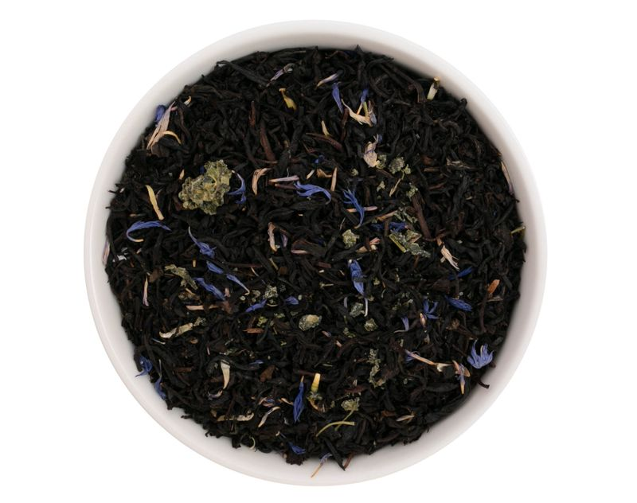

Черный самурай

Описание
Ароматный чёрный чай с лепестками василька и уникальным ингредиентом — гиностеммой, которую также называют «травой бессмертия».
Цена: 750 р
Характеристики:
- 3 грамма на чашку 200 мл
- 95 °C, 3 минуты после закипания
- 3-5 минут дать на заваривание
Подробное описание
Ароматный чёрный чай с лепестками василька и уникальным ингредиентом — гиностеммой, которую также называют «травой бессмертия». Мягкий аромат манго и уникальный состав помогут набраться сил.